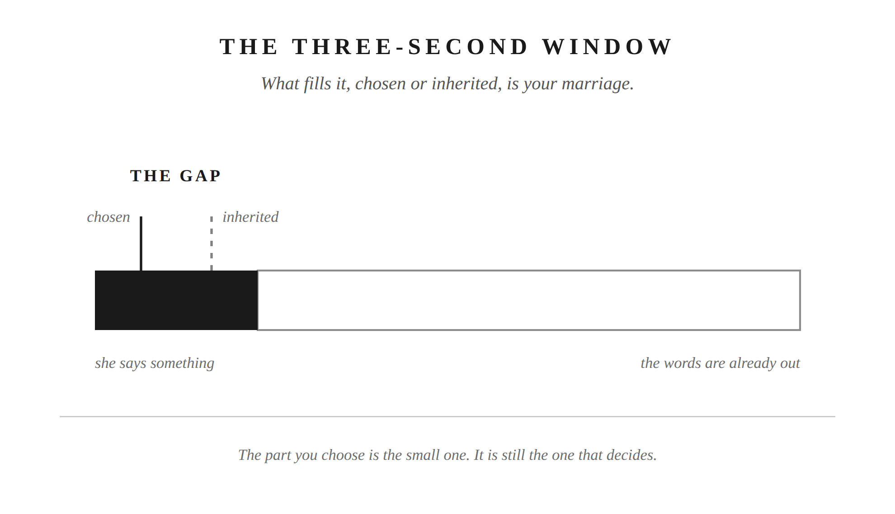
Chapter 1
The Gap
Between what she says and your response is three seconds. What fills it, chosen or inherited, is your marriage.
Prohairesis, the faculty of choice, is what Epictetus called the part of you that can sit inside the gap before a response fires. It’s there every time, whether you use it or not.
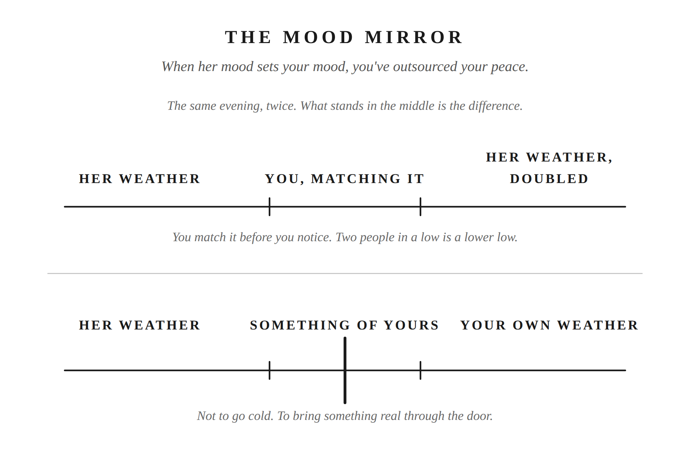
Chapter 2
The Mood Mirror
When her mood sets your mood, you’ve outsourced your peace to someone who never signed up to carry it.
The ruling faculty (the hegemonikon) governs your own inner state independent of circumstances. Steadiness is a practice you run, not a mood that depends on how things are going.
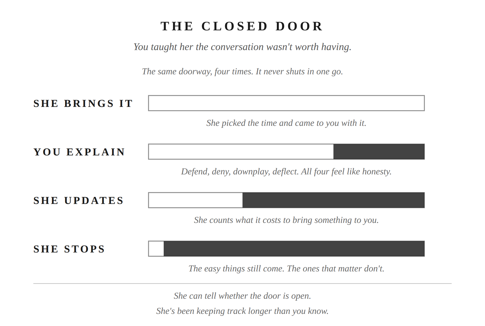
Chapter 3
The Closed Door
Every time you defended yourself, you taught her the conversation wasn’t worth having.
Seneca called this praemeditatio malorum: rehearsing a hard conversation in your head before it happens, so the real one doesn’t catch you flat-footed. The prep work happens earlier, not in the room.
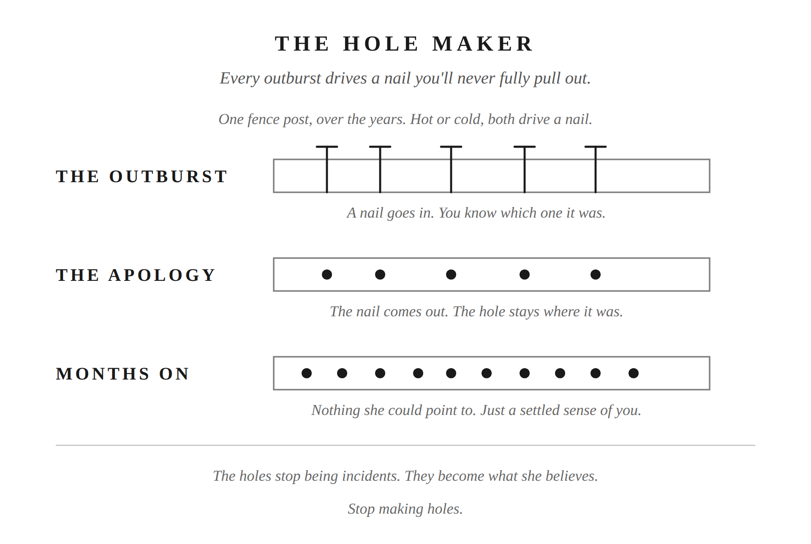
Chapter 4
The Hole Maker
Anger isn’t strength. Every outburst drives a nail you’ll never fully pull out.
Seneca split anger into stages: an involuntary jolt you can’t stop, then a second stage that’s a real choice. Self-command was never about not feeling the jolt. It’s about what you do with the stage after it.
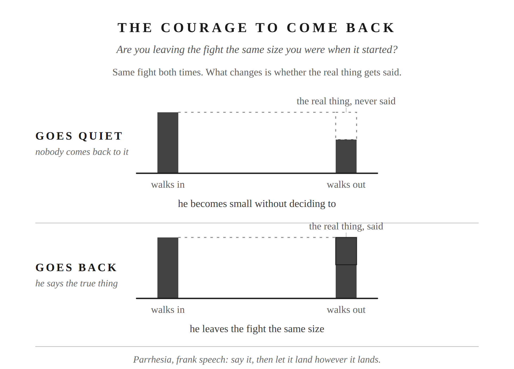
Chapter 5
The Remaining Nails
The fight ends before the real thing gets said. That’s not resolution. That’s how a man becomes small without deciding to.
Parrhesia: the Stoic discipline of speaking plainly, without dressing it up or managing how it lands. Whether she receives it the way you hoped is a preferred indifferent: something to want, not something you get to control.
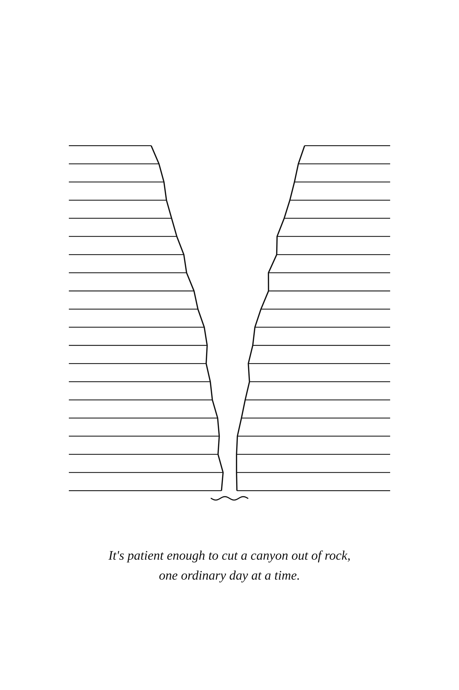
Part I closing plate
The river is steady. Things get thrown into it all day and the current keeps its pace. It doesn’t fight the stone in its path. It goes around it, and it goes on. It takes the landscape as it finds it and holds its direction anyway. It’s patient enough to cut a canyon out of rock, one ordinary day at a time.
It’s patient enough to cut a canyon out of rock, one ordinary day at a time.
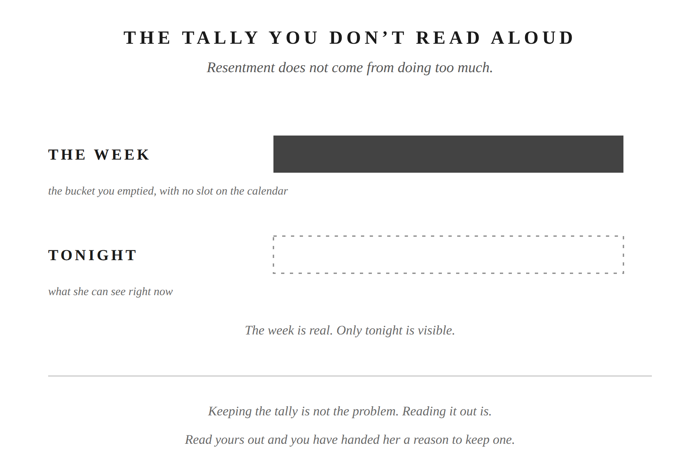
Chapter 6
The Tally You Don’t Read Aloud
Resentment doesn’t come from doing too much. It comes from being the only one who can see it.
Musonius Rufus on duty freely chosen: obligation performed for its own sake doesn’t accumulate into debt. Performed for credit, it always does. The resentment lives in the intention, not the act.
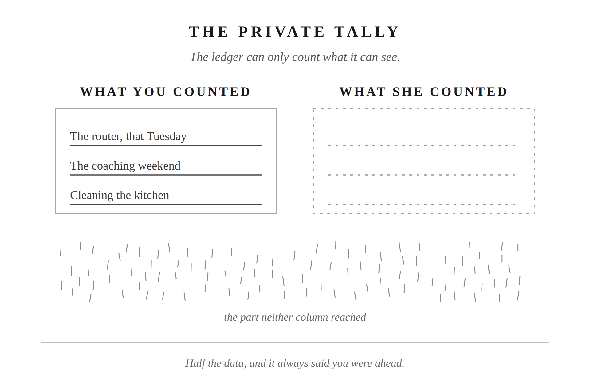
Chapter 7
The Private Tally
The ledger you keep in your head can only count the visible things, so it was always going to tell you that you’re ahead.
The Stoics built their ethics on one question: is this mine to control, or isn’t it? Applied here, the only column with your name on it is what you give and how you give it. Not what you’re owed back for it.
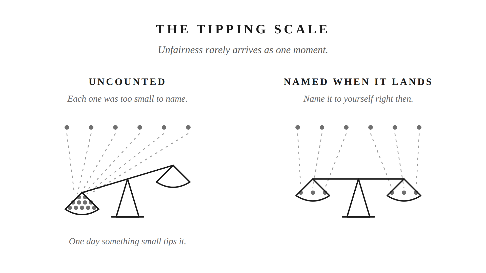
Chapter 8
The Tipping Scale
Unfairness rarely arrives as one moment. It’s small things you never counted, tipping quietly until you finally feel the weight.
Two Stoic tools for two directions. When her complaint lands on you, Marcus Aurelius’s test: is what she’s naming true, or not? When the uncredited work is yours, Seneca’s: the deed already paid itself, the moment it was done. No third thing to wait for.
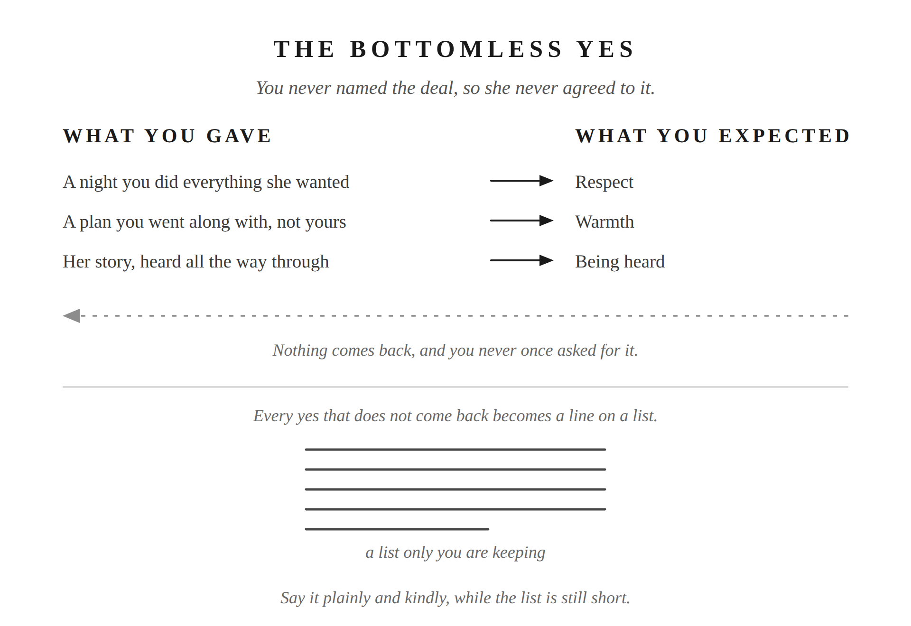
Chapter 9
The Bottomless Yes
He kept saying yes expecting something back for it, and when it didn’t come, the disappointment piled up quietly instead of turning into one big blowup.
Epictetus told his students to be picky with their words, not silent with them. Restraint was never about hiding what you think from the person closest to you. It’s about choosing what’s worth saying, and saying it well.
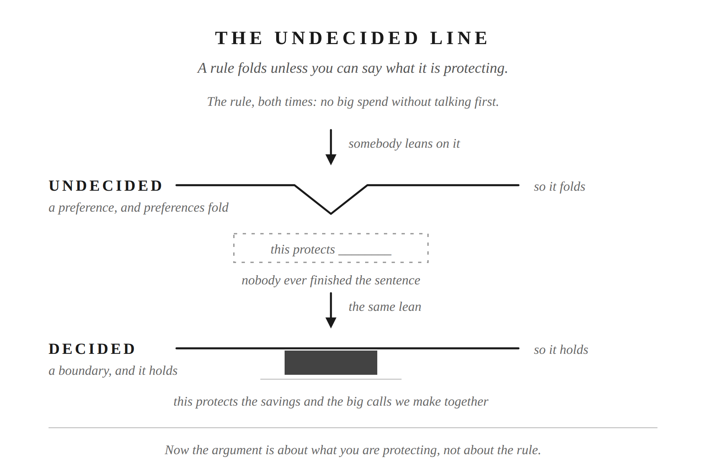
Chapter 10
The Undecided Line
He had rules he’d defend without thinking and had never said what any of them were for, so they folded the first time somebody pushed.
A boundary protects something you can name. A preference is just something you want, and preferences fold.
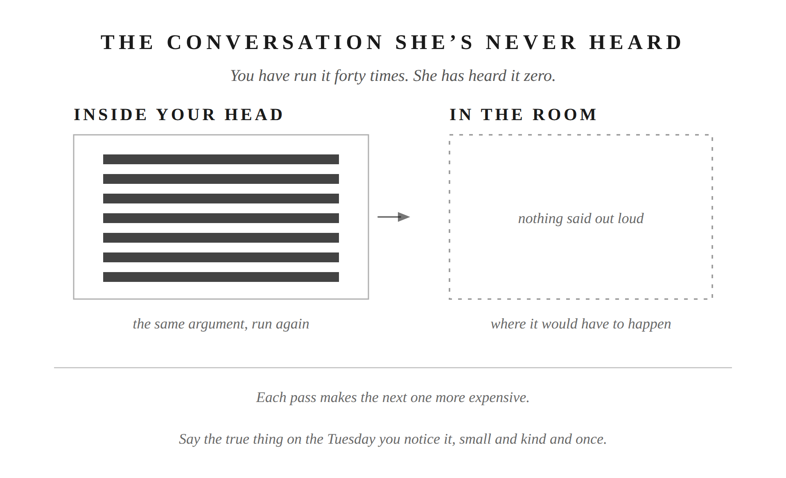
Chapter 11
The Conversation She’s Never Heard
He treated every hard thing as something to endure, and ran the argument forty times in his head while she heard it zero.
Say the true thing when it happens, kindly and once, and let her response be hers.
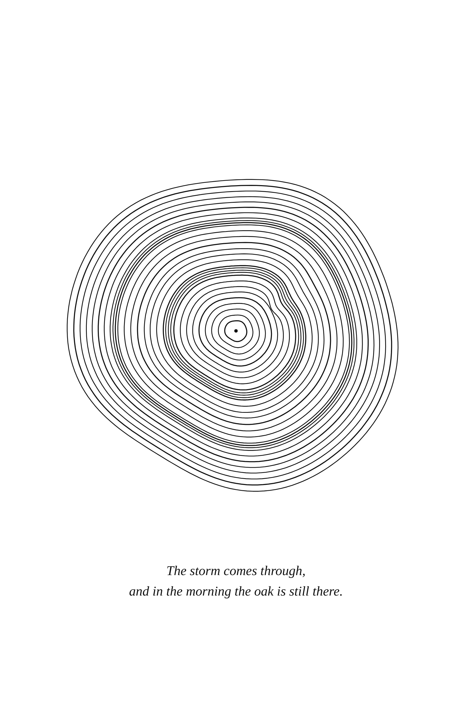
Part II closing plate
The oak is sturdy. Weight gets put on it and the branch holds. It stands where it stands, and it will be there tomorrow. It loses branches and doesn’t stop being the tree. It gives shade in the heat and cover in the rain, and asks nothing for it. The storm comes through, and in the morning the oak is still there.
The storm comes through, and in the morning the oak is still there.
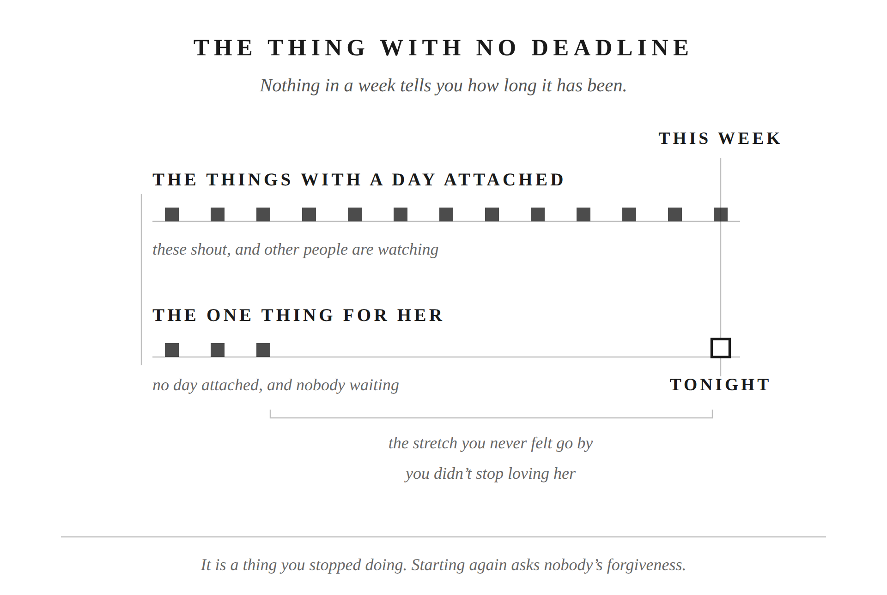
Chapter 12
The Thing With No Deadline
His wife asked him when he’d last taken her on a date, and the honest answer was five months he never felt go by.
Marcus Aurelius corrected an old line about doing few things. Do the necessary things instead. Writing that list honestly means saying out loud whether she is on it.